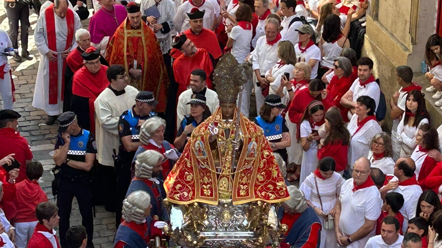

Cómo ver la Procesión de San Fermín
Guía práctica y respetuosa para vivir la procesión de San Fermín con el recorrido completo, horarios reales, momentos clave y mejores calles para entender y disfrutar este momento tradicional.

La procesión de San Fermín es el acto más simbólico de la fiesta. No es un momento puntual, sino un recorrido largo, lleno de pequeños detalles, tradición y significado. Y precisamente por eso, la forma de verla cambia completamente lo que te llevas de ella.
¿Qué es la Procesión de San Fermín?
Cada 7 de julio a partir de las 10:00, Pamplona acompaña al santo en un recorrido por el casco antiguo que dura aproximadamente cuatro horas y media. La corporación municipal, la comparsa de gigantes, la banda de música, el cabildo catedralicio y muchos otros elementos tradicionales forman una comitiva con un orden muy definido.
La imagen de San Fermín sale de la iglesia de San Lorenzo, recorre la ciudad y vuelve a su capilla, en un acto donde conviven lo religioso, lo cultural y lo popular.
Recorrido y horarios aproximados de la Procesión de San Fermín
La procesión sigue un recorrido largo por el casco antiguo y se desarrolla durante toda la mañana, con diferentes momentos distribuidos en el tiempo. Aunque hay referencias horarias habituales, no es un evento milimétrico: el ritmo puede variar ligeramente cada año.
El acto comienza hacia las 10:00 en el Ayuntamiento, cuando la corporación municipal, vestida de gala, se dirige a la catedral para recoger al cabildo. Desde ahí, toda la comitiva se desplaza hacia la iglesia de San Lorenzo.
Alrededor de las 10:30, la imagen de San Fermín sale de San Lorenzo y comienza el recorrido por las calles del casco antiguo:
- Rincón de la Aduana
- San Antón
- Zapatería
- Calceteros
- Plaza del Ayuntamiento
- San Saturnino
- Calle Mayor
- Regreso a San Lorenzo
A lo largo de este recorrido, que dura aproximadamente una hora y media, se suceden distintos momentos tradicionales repartidos por la ciudad.
Hacia el mediodía (en torno a las 11:45–12:00), la imagen vuelve a la iglesia de San Lorenzo, donde comienza la misa.
Tras la celebración, ya entrada la tarde, la corporación y el cabildo regresan hacia la catedral. Es entonces cuando tiene lugar uno de los momentos más especiales del día.
El final llega aproximadamente hacia las 14:15–14:30, con el conocido “momentico” en el atrio de la catedral y el regreso final hacia el Ayuntamiento.
Momentos clave de la Procesión de San Fermín
Más que un único instante, la procesión está construida a partir de pequeños momentos distribuidos a lo largo del recorrido. Muchos de ellos ocurren en puntos muy concretos y con cierta tradición en el tiempo.
Poco después de salir de San Lorenzo, ya en la zona de San Antón, comienzan los primeros homenajes cantados al santo, con jotas interpretadas desde balcones o a pie de calle.
En torno a la Plaza del Consejo, aproximadamente media hora después del inicio, es habitual uno de los primeros cantos más reconocidos, interpretado por corales locales.
Uno de los momentos más simbólicos llega hacia San Saturnino, donde la procesión se detiene en el “pocico de San Cernin”: dos niños colocan flores mientras suena el “Agur Jaunak”, en un ambiente muy especial.
Más adelante, en Calle Mayor, se producen varios de los momentos más emotivos: jotas cantadas en silencio, a veces desde balcones históricos, otras veces a pie de calle, donde la procesión se detiene brevemente.
Finalmente, tras la misa y ya de vuelta hacia la catedral, tiene lugar el momento más conocido:
- El “momentico”: en el atrio de la catedral, con los gigantes bailando y las campanas sonando.
Este instante marca el cierre emocional de la procesión y es uno de los más recordados cada año.
¿Todos estos momentos ocurren siempre exactamente a la misma hora? No. Existen referencias habituales, pero la procesión no es exacta en tiempos. El ritmo depende de paradas, cantos y desarrollo general.
¿Se pueden ver varios momenticos en el mismo día? En la práctica es muy difícil. Los tiempos y la distancia entre puntos hacen casi imposible moverse y llegar bien a varios momentos clave.
¿Hay momentos previos a la procesión que casi nadie conoce?
Sí. Antes de salir, dentro de la iglesia de San Lorenzo, se produce el traslado de la imagen del santo desde el altar hasta las andas. Es un acto poco visible pero muy simbólico.
Este momento apenas lo presencia público general, pero forma parte esencial del inicio real de la procesión.
¿Cuáles son las mejores calles para ver la procesión?
No hay una única mejor calle. Cada tramo ofrece una experiencia distinta:
- Calle Mayor: uno de los tramos más completos y simbólicos.
- Plaza del Ayuntamiento: más abierta, permite ver mejor la comitiva.
- San Saturnino: importante por el “pocico”.
- San Antón / Zapatería: máxima cercanía, pero menor perspectiva.
La elección depende de lo que busques: cercanía, visión o significado.
Cómo se ve realmente la procesión
A diferencia de otros actos, aquí no existe una visión completa desde un solo punto. La procesión se despliega por muchas calles y dura más de una hora.
Algunos puntos permiten ver más recorrido (ves llegar y marcharse a la comitiva). Otros ofrecen cercanía total, pero en un tramo muy corto.
¿Se puede ver toda la procesión desde un balcón? No. Desde cualquier balcón o punto solo se ve una parte del recorrido, aunque algunos permiten entender mejor el conjunto que otros.
¿Qué opciones hay para ver la Procesión?
Hay varias formas de vivirla:
- Desde la calle: ambiente auténtico y acceso libre.
- En puntos concretos: mejor ubicación, más afluencia.
- Desde balcones: más comodidad y mejor lectura del tramo visible.
Cada una cambia completamente la experiencia.
Qué marca realmente la diferencia
- Altura: abajo más intensidad, arriba más perspectiva.
- Tramo: algunas calles permiten ver más desarrollo.
- Acceso: ciertos balcones obligan a entrar antes.
- Tiempo: es un acto largo, hay espera.
- Contexto: entender lo que pasa lo cambia todo.
Por eso es tan importante elegir bien dónde verla. No se trata solo de tener sitio, sino de cómo vas a vivir ese momento.
Si quieres, podemos ayudarte a encontrar el punto que mejor encaje contigo dentro de nuestras experiencias personalizadas.
La diferencia que no se ve
Hay algo que no aparece en ninguna guía: vivir la procesión con alguien que la ha vivido siempre.
Personas que conocen cada calle, cada historia, cada cambio. Que te cuentan por qué ahí se canta, qué pasaba antes, cómo ha evolucionado.
Eso no se puede comprar fácilmente. Pero cuando ocurre, cambia completamente la experiencia.
Integrarla en San Fermín
La procesión forma parte de una mañana más amplia. Se puede combinar con otros momentos como la despedida de los gigantes o con planes diseñados a medida.
Si es tu primera vez, empieza por la guía qué hacer en San Fermín o descubre quiénes somos.
Consejos para ver la Procesión de San Fermín
Algunas claves importantes:
- Llegar con tiempo, especialmente en accesos complicados.
- No obsesionarse con “el mejor sitio”.
- Entender que no se ve todo.
- Priorizar comodidad si vas a esperar.
¿Cuánto dura la Procesión de San Fermín?
La procesión dura aproximadamente entre cuatro y cinco horas, dependiendo del ritmo y las paradas.
¿Hace falta llegar pronto?
Depende del punto. En zonas concurridas o accesos dentro del recorrido, sí es recomendable llegar con bastante antelación.